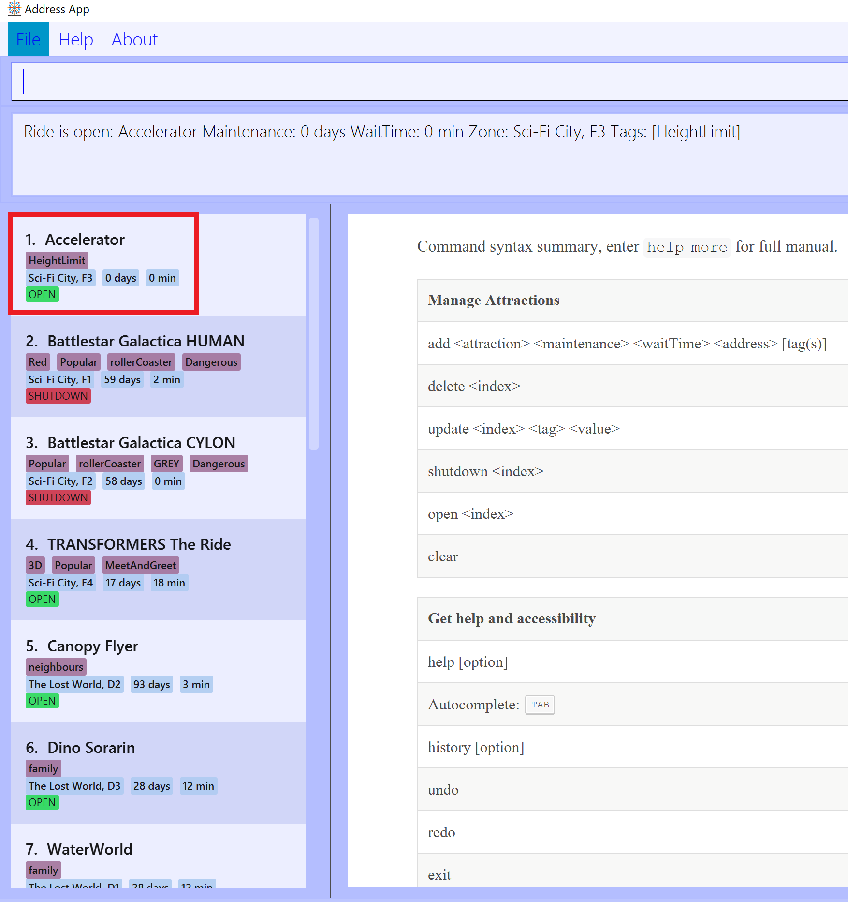
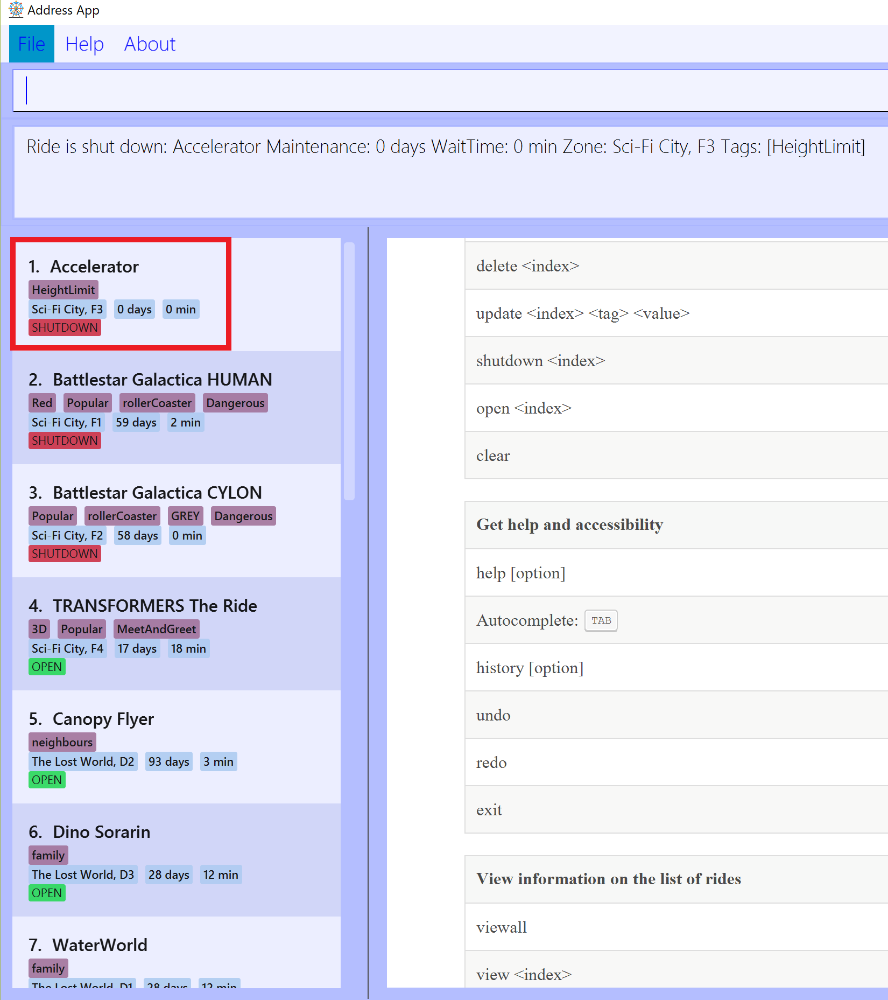

PROJECT: ThanePark
1. Overview
The purpose of this portfolio is to document my contributions to the software engineering module(CS2103T) project, ThanePark.
ThanePark is a desktop application for theme park management. The application is optimized for keyboard-oriented users and retains user-friendly graphics that informs users of their decisions in a glance. Theme park operators can interact with it by using a Command Line Interface(CLI). It also has a Graphical User Interface (GUI) created with JavaFX. ThanePark is mostly written in Java and has about ten thousands of code.
My part in the project is to implement open and shutdown commands so that operators can open and close the rides
easily.
2. Summary of contributions
-
Major enhancement: Added the ability to open and shutdown rides in ThanePark
-
It allows the user to open and shutdown rides easily.
-
Justification: This feature improves the product significantly because a user can open/shutdown rides with a single command.
-
Highlights: This enhancement introduces a new enum class,
Status. It allows the user to know whether the rides are inopen,shutdown, ormaintenancestatus. -
Credits: The
openandshutdownfeatures are based on the wayupdatefeature works, with the help ofUpdateRideDescriptor.
-
-
Minor enhancement: Refactor
add,deleteandupdatecommands. -
Code contributed: [Functional code and test code]
-
Other contributions:
-
Documentation:
-
Update the user guide for the
openandshutdownfeatures. -
Update the developer guide for the implementation of the
openfeature with sequence and activity diagrams of how theopencommand works. -
Update project portfolio page(PPP).
-
-
3. Contributions to the User Guide
Given below are sections I contributed to the User Guide. They showcase my ability to write documentation targeting end-users. |
3.1. Adding attractions: add
Adds an attraction by name with the information.
Format: add <n/attraction> <m/maintenance> <w/waitTime> <z/zone> [t/tag(s)]
A ride can have any number of tags (including 0).
| Maintenance and waiting time should only contain positive integers with at least 1 digit long and should be less than 1 billion. |
| The length limit for zone and tag(s) field is 40 characters. |
Examples:
-
add n/Transformers m/1 w/30 z/John street, block 123, #01-01
-
add n/The Mummy m/3 w/45 z/311, Clementi Ave 2, #02-25 t/3D t/indoor
3.2. Deleting attractions: delete
Deletes the specified attraction from ThanePark.
Format: delete <index>
-
Deletes the ride at the specified index.
-
The index refers to the index number shown in the list of displayed rides.
-
The index must be a positive integer 1, 2, 3, …
Examples:
-
viewall
delete 2
Deletes the 2nd ride in ThanePark. -
find Puss in Boots' Giant Journey
delete 1
Deletes the 1st ride in the results of the find command.
3.3. Updating information of attraction: update
Updates the details of the ride identified by the index number used in the displayed ride list.
| The length limit for zone and tag(s) field is 40 characters. |
Format: update <index> <prefix/value>
Parameters: INDEX (must be a positive integer) [n/NAME] [m/MAINTENANCE] [w/WAITING_TIME] [z/ZONE] [t/TAG].
Examples:
-
update 1 m/90
Updates the 1st ride in ThanePark. -
update 2 m/90 w/60
Updates the 2nd ride in ThanePark.
| This command cannot update the waiting time and maintenance field when the ride is not open. |
| Maintenance and waiting time should only contain positive integers with at least 1 digit long and should be less than 1 billion. |
3.4. Shutting down attraction: shutdown
Closes the ride for the day. Display statistics for the ride on that day.
Format: shutdown <index>
| This command will reset the waiting time field to zero. |
Example :
As seen in the diagram below, the status of the 1st ride changes from

Figure 1. Before executing
shutdown 1

Figure 2. After executing
shutdown 1After |
3.5. Opening attraction: open
Opens the ride for the day. Display statistics for the ride on that day.
Format: open <index>
Example:
-
open 2
Opens the 2nd ride in ThanePark.
| This command also resets the waiting time field to zero. |
4. Contributions to the Developer Guide
Given below are sections I contributed to the Developer Guide. They showcase my ability to write technical documentation and the technical depth of my contributions to the project. |
4.1. Open/Shutdown Feature
This section documents how open/shutdown features are implemented and how they work. Note that open and shutdown
features are very similar to each other.
4.1.1. Current Implementation
The OpenActivityDiagram below show the execution flow of OpenCommand:
OpenCommandThe following sequence diagram will show how the open/shutdown feature works:
As seen in the diagram above, the open function is implemented with the help of OpenCommand and
UpdateRideDescriptor class. When the ThaneParkParser parses the user input and finds the open command word open,
it calls a new OpenCommandParser to parse the arguments from the user input.
Next, the OpenCommandParser will parse the arguments from the user input into an index and
return a new OpenCommand with the index as the parameter.
Finally, the LogicManager will execute the open command, and the index will be used to find the ride from the
list.
After that, the open command will change the status of the ride to Open by utilising the UpdateRideDescriptor
class.
4.1.2. Design Considerations
Aspect: Data structure to support open/shutdown commands
-
Alternative 1(Current choice): Change the status of the ride inside the
opencommand and include theUpdateRideDescriptorin theopencommand as well.-
Pros: This would be easier to implement as
UpdateRideDescriptorclass no need to abstracted out from theopenCommandclass. -
Cons:
UpdateRideDescriptorwill modify the status of rides inside theopenCommandclass which will make theopenCommandclass less cohesive.
-
-
Alternative 2: Abstracting
UpdateRideDescriptorinto a separate class and modify the status of rides in the separate class instead ofopenCommandclass.-
Pros: The
openCommandwill be more cohesive. -
Cons: More classes would need to be implemented to modify the status of rides.
-